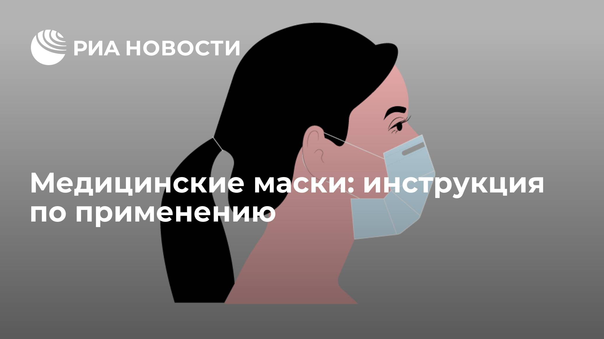
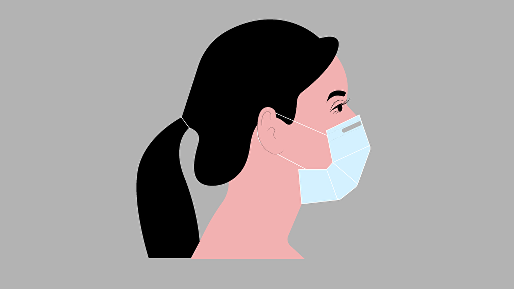
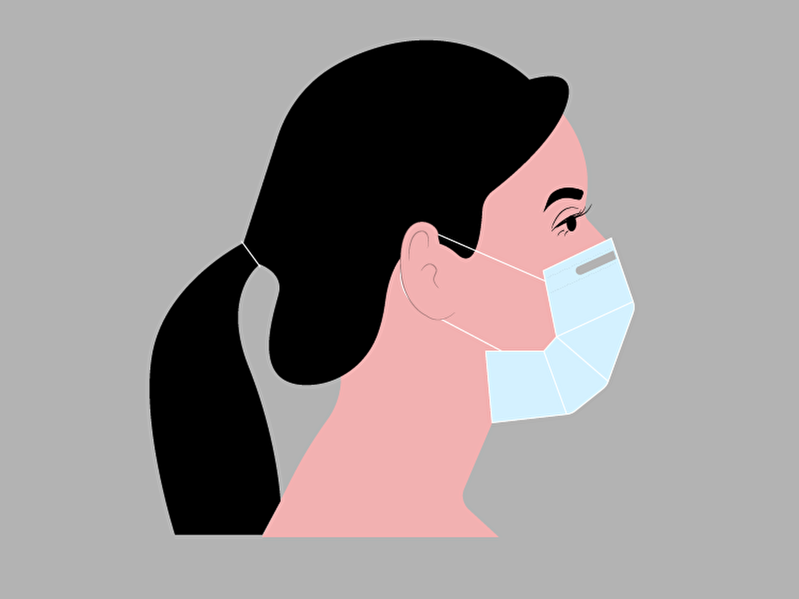
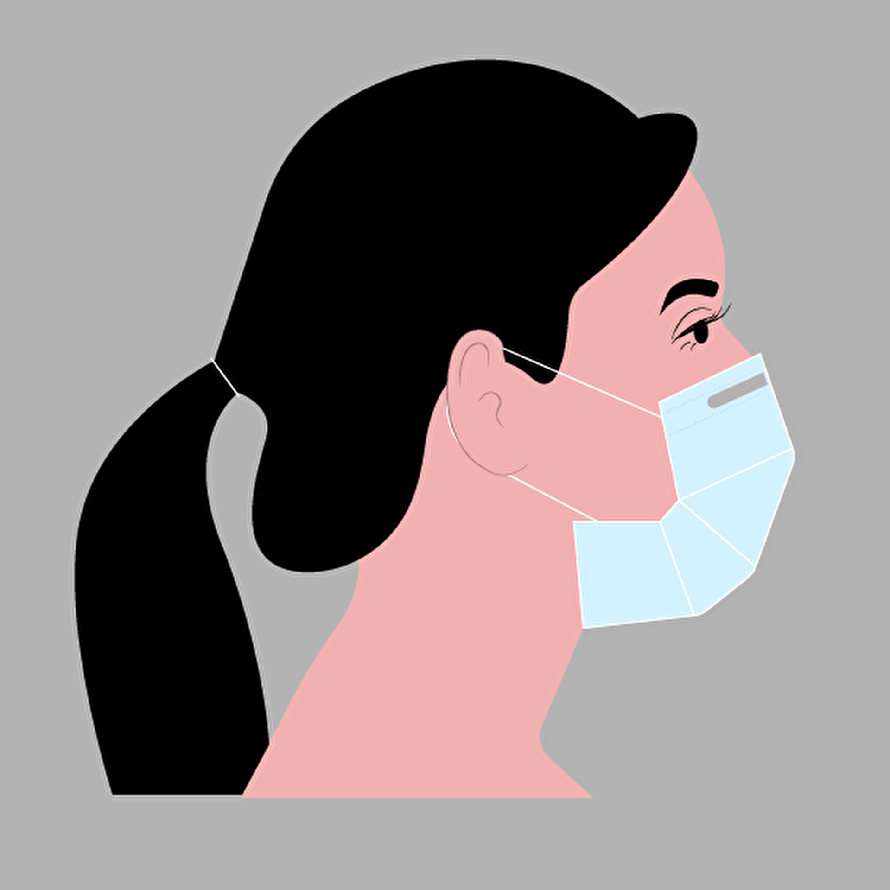

Медицинские маски: инструкция по применению
Всемирная организация здравоохранения в связи с пандемией коронавирусной инфекции COVID-19 опубликовала рекомендации по использованию одноразовых медицинских масок.Специалисты ВОЗ предупреждают: маски эффективны только в сочетании с другими методами профилактики ОРВИ и не нужны всем поголовно.Кому действительно следует их носить, а также как правильно надевать, снимать и утилизировать — в инфографике Ria.ru.
Posted On: 2020-03-25T08:17:00




Content Date: 2020-03-25
Download Date: 2021-04-21
Document ID: L0C04ANDM